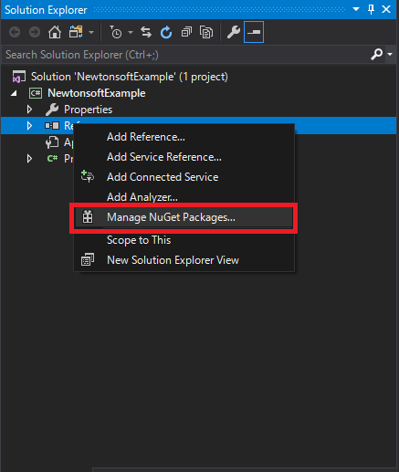
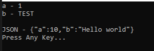

[C#] Newtonsoft.JSONライブラリを利用してJsonデータ構造を扱う方法
こんにちは。明月です。
この投稿はC#でNewtonsoft.JSONライブラリを利用してJsonデータ構造を扱う方法に関する説明です。
まず、Jsonに関して説明しますとJsonとは(キー,値)構造で人が認識できる開放型標準データフォーマットです。
私が10年前に開発する時にはXMLの構造でデータを扱うことが多くありましたが、最近はほとんどJsonタイプのデータを扱うプログラムが多いです。
でもXMLを使わないことではないけれども、XMLより直観的な構造だし、データ修正がXMLよりしやすいからだと思います。(XMLはタグの開き、閉めが間違っても全体エラーが発生します。)
そのため、プログラムライブラリでJsonを読み取るか書き込むのライブラリが多いですが、Newtonsoft.JSONがたくさん使うし、一番機能が多いので紹介します。
まず、NugetでNewtonsoft.JSONライブラリを連携しましょう。

using System;
//네임스페이스 선언
using Newtonsoft.Json;
namespace NewtonsoftExample
{
// Jsonタイプに変換するクラス
class JsonExample
{
public int Data1 { get; set; }
public String Data2 { get; set; }
}
class Program
{
// 実行関数
static void Main(string[] args)
{
//Jsonタイプのデータ
var json = "{ 'Data1': 1, 'Data2':'TEST' }";
//JsonタイプのStringデータをJsonExmpleクラスに変換
var data = JsonConvert.DeserializeObject<JsonExample>(json);
// JsonExmpleクラスのData1の値をコンソールに出力
Console.WriteLine("Data1 - " + data.Data1);
// JsonExmpleクラスのData2の値をコンソールに出力
Console.WriteLine("Data2 - " + data.Data2);
// データを再設定
data.Data1 = 10;
data.Data2 = "Hello world";
// JsonExampleクラスをJSONタイプに変換(結果はStringタイプ)
json = JsonConvert.SerializeObject(data);
// コンソール出力
Console.WriteLine("JSON - " + json);
Console.WriteLine("Press Any Key...");
Console.ReadKey();
}
}
}
結果をみれば、StringタイプのJSONデータがクラスに変換されたし、クラスのデータがStringタイプのJSONデータに変換することを確認できます。
注意点はJsonタイプでシングルクォートはStringでないことは定数に表記されます。
なのでJsonとクラスのデータタイプが合わない場合にはエラーが発生します。
後、上のことはプロパティ名とJsonのキーを一致しましたが、仕様によって一致できない場合もあります。
その場合はJsonPropertyアトリビュートを利用して設定が可能です。
using System;
//네임스페이스 선언
using Newtonsoft.Json;
namespace NewtonsoftExample
{
// Jsonタイプに変換するクラス
class JsonExample
{
// キーがaのデータを入力する。
[JsonProperty("a")]
public int Data1 { get; set; }
// キーがbのデータを入力する。
[JsonProperty("b")]
public String Data2 { get; set; }
}
class Program
{
// 実行関数
static void Main(string[] args)
{
//Jsonタイプのデータ
var json = "{ 'a': 1, 'b':'TEST' }";
//JsonタイプのStringデータをJsonExmpleクラスに変換
var data = JsonConvert.DeserializeObject<JsonExample>(json);
// JsonExmpleクラスのData1の値をコンソールに出力
Console.WriteLine("a - " + data.Data1);
// JsonExmpleクラスのData2の値をコンソールに出力
Console.WriteLine("b - " + data.Data2);
Console.WriteLine();
// データを再設定
data.Data1 = 10;
data.Data2 = "Hello world";
// JsonExampleクラスをJSONタイプに変換(結果はStringタイプ)
json = JsonConvert.SerializeObject(data);
// コンソール出力
Console.WriteLine("JSON - " + json);
Console.WriteLine("Press Any Key...");
Console.ReadKey();
}
}
}

Newtonsoft.JSONのライブラリは様々な機能がありますが、私の基準では上の以外には使わないです。
ここまでC#でNewtonsoft.JSONライブラリを利用してJsonデータ構造を扱う方法に関する説明でした。
ご不明なところや間違いところがあればコメントしてください。
- [C#] 非同期ソケット通信(IOCP)-APMパターン2020/05/18 18:45:37
- [C#] 非同期ソケット通信(IOCP)-EAPパターン2020/05/15 19:31:02
- [C#] NPOIを利用してExcelを読み込んで出力する方法2020/05/08 10:43:52
- [C#] NPOIライブラリを利用してエクセルファイルを生成する方法2020/05/07 01:49:01
- [C#] Geckoライブラリを利用してウェブスクレイピングする方法2020/05/05 00:52:26
- [C#] PDFを作成する方法(iTextSharp)2020/05/03 10:22:40
- [C#] シリアライズ(Serialization)をする方法2020/04/30 19:32:04
- [C#] dynamicタイプの動的パラメータ-DynamicObject(WinFormでASP.MVCのViewBagオブジェクトを使用する方法)2020/04/29 22:41:32
- [C#] Stringの補間式(interpolation)2020/04/27 20:39:57
- [C#] Newtonsoft.JSONライブラリを利用してJsonデータ構造を扱う方法2020/04/23 20:19:53
- [C#] EMailを送信する方法(System.Net.Mail)2020/04/22 19:00:42
- [C#] ini環境ファイルを使う方法2020/04/22 00:09:39
- [C#] 環境設定ファイルを扱う方法(System.Configuration)2020/04/20 19:37:57
- [C#] Reflectionを利用してクラス複製する方法2020/04/17 00:34:33
- [C#] XMLをXPathを利用してデータを取得する方法2020/04/16 00:47:17
- [Python] 07. globalとnonlocal2020/06/03 20:34:49
- [Python] 06. 関数(function) - インライン関数、callbak、ラムダ(lambda)そしてクロージャ2020/06/02 20:51:22
- [Python] 05. コンプリヘンション(Comprehension)を使用する方法2020/06/01 19:38:58
- [Python] 04. 制御文(if, while, for, break, continue)とインデント2020/05/29 21:09:08
- [Python] 03. Pythonでリスト(list)とタプル(tuple)、そしてディクショナリ(dictionary)、セット(set)2020/05/27 18:49:08
- [Python] 02. データタイプ、変数宣言そしてコメントする方法2020/05/26 18:16:52
- [Python] 01. Python3をインストールする方法(Anacondaインストール)2020/05/25 19:02:44
- [Java] HttpConnectionを利用してウェブページを取得する方法2020/05/20 23:53:24
- [Java] Jsoupを利用してXMLファイル(HTML)を扱う方法2020/05/19 19:32:21
- [C#] 非同期ソケット通信(IOCP)-APMパターン2020/05/18 18:45:37
- [C#] 非同期ソケット通信(IOCP)-EAPパターン2020/05/15 19:31:02
- [C#] ソケット(Socket)通信をする方法2020/05/13 17:37:13
- [C#] NPOIを利用してExcelを読み込んで出力する方法2020/05/08 10:43:52
- [C#] NPOIライブラリを利用してエクセルファイルを生成する方法2020/05/07 01:49:01
- [C#] Geckoライブラリを利用してウェブスクレイピングする方法2020/05/05 00:52:26